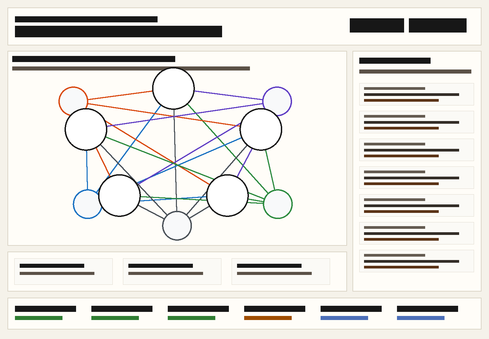

personal-memory-ai · first screen
Memory brain graph
나보다 나를 더 잘 아는 개인 기억 AI. Daily diary captures and imported memories are primary nodes; Ask, pattern detection, import preview, Decision Replay, and the evidence drawer support the graph.
visible app shell screenshot artifact
Initial loaded daily diary memory-brain graph

status labels
Planned, skeleton, fake/sample, partial, and implemented surfaces are explicit
Initial loaded memory seedfake/sampleReview fixture only; no private files are read.
App quick diary capturepartialCapture contract exists; native app client is separate.
Native app capture clientskeletonTwo-surface boundary is shown, not built as native UI here.
Web graph workspaceimplementedFirst screen graph connects memory entries by emotion/project/decision/outcome/source.
Import previewpartialNotion/Obsidian/Markdown preview is wired.
Weekly reportplannedVisible roadmap item only.